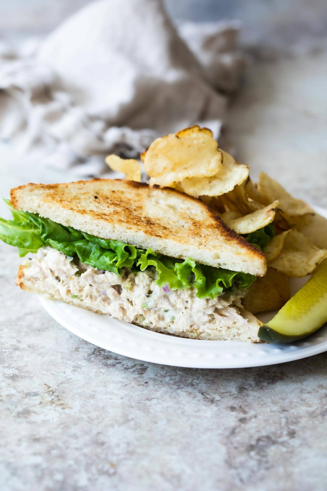

Tuna salad sandwich

This recipe makes an excellent tuna salad that can be used as a dip with crackers or a sandwich! What's great is that for the price of 1 Subway footlong, you can make 5. This is not my recipe, you can find it here.
Ingredients:
- 4 cans of tuna in light water
- 1 cup mayonnaise
- 1/3 cup fine chopped celery
- 2 tbs minced red onion
- 2 tbs sweet pickle relish
- 1 tbs fresh lemon juice
- 1 clove of minced garlic
- Salt and pepper to taste
Directions:
- In a medium bowl, mix tuna, mayonnaise, celery, onion, relish, lemon juice, and garlic
- Season to taste with salt and pepper and serve
Return to Homepage